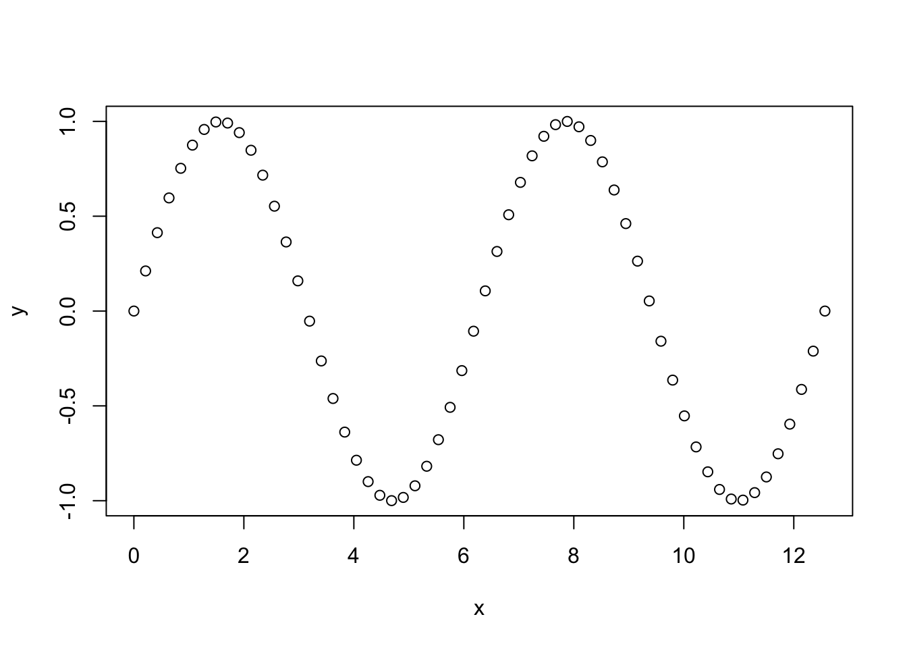
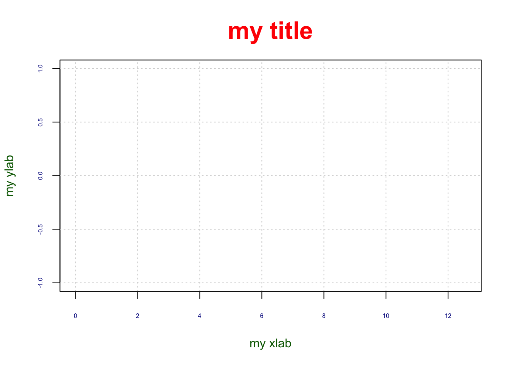

Chapter 7 Graphics
In this chapter we discuss graphics with R.
In this chapter, we will as an example the function sin(x) in the range \(0, 2\pi)\).
nb_points <- 60
x <- seq(from = 0, to = 4*pi, length.out = nb_points)
y <- sin(x)
plot(x, y)
In general, we found that the following approach is quite usefull,
- Step 1: Construct graph “frame”, i.e. basically an empty graph with the right title, labels, axis and so on. Often, this can be achieve with
plot(). It is also useful to grid. Here is an example:
plot(NA, xlim = range(x), ylim = range(y), main = "my title",
xlab = "my xlab", ylab = "my ylab", col.main = "red",
col.lab = "darkgreen", col.axis = "darkblue", cex.main = 2,
cex.lab = 1, cex.axis = 0.5)
grid()